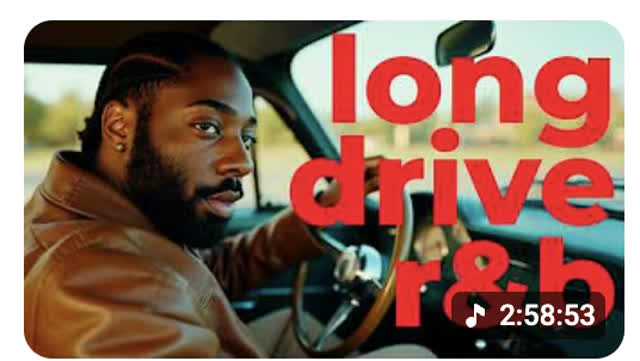

I build and lead creative operations across ~50 YouTube channels viewed 90M+ times — and I build the software that lets a small team move at that scale. The diagnosis and the design are mine; AI is how I execute them.
Each one started as a real constraint in production. I figured out what the system needed to do, designed it, and built it (AI-assisted). The numbers are the receipts.
I designed the operating system for content production across ~50 channels — standardized briefs, batch workflows, reusable template architecture, and the automation under it — so output scales without the team (or the quality) breaking.
I built a templatized, scalable thumbnail system. The design architecture and visual judgment stay human — that's the part that matters. AI does the heavy lifting: filling placeholders, sourcing and fetching images, upscaling, background work. The result: consistent, on-brand thumbnails at a fraction of the time.

I built a browser-automation + API pipeline that assembles compilations end to end, unattended. One run produced 21 multi-track compilations — 240+ tracks — in 59 minutes, no hands on keyboard.
Liner — a macOS app that isolates vocals, transcribes, syncs lyrics to word-level timing, and renders 4K. A 1-hr render dropped from 20+ min to 3–5; it ships 10+ lyric videos/week. Weave — a local AI-agent editor that turns a 2-hr recording into a finished cut, saving ~6 hrs of manual editing per video.
macOS production engine — vocal isolation, Whisper transcription, word-level lyric sync, 4K FFmpeg render.
Local AI-agent editor — auto-transcribe, cut filler, find the narrative hook, render or export to Premiere.
The systems don't run in a vacuum — they produce for official artist channels with millions of followers. Content I produced and directed.
Lyric videos, compilations, and visual systems I produced and directed for these official channels — 90M+ combined views, including a single lyric video past 10M.
Music catalog channels where I designed the full production system: reusable templates, AI thumbnail pipelines, and a channel identity that scales.
Designed the visual system and AI thumbnail pipeline — a model trained on the artist's likeness generates context-specific images. ~⅓ of top-40 videos run on it.
Full creative ownership — identity, visual system, lyric videos, compilations. Hit YouTube's monetization threshold 8 days from launch.
Designed the adaptive vinyl template — colors, label art, and tracklist pulled from each album's artwork. Same structure, never looks the same twice.
A personalized background system on a reusable animation base — each video gets thematic props and era objects. 70% of top-20 videos use it, holding 84% of their views.
Founded and led a creative department across ~50 channels. SOPs, frameworks, briefs, and review cadences so a small team ships at volume without quality drift.
Find the bottleneck, replace it with software (AI-assisted) — internal apps, API orchestration, browser automation, batch pipelines. Hours of work become one command.
Programmatic video and image at scale — FFmpeg renders, computer-vision moderation, transcription, and generative-AI workflows wired into real production.